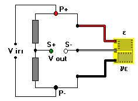

1+v (Axial/Bending) Bridge
1+v (Axial/Bending) Bridge1+v (Axial/Bending) Bridge
Associated Application
General Considerations
This bridge configuration is most often used in low-cost transducers where a single dual-element gage (with grids oriented at 90 deg to one another) is used to reduce gage and installation costs. A cantilevered beam is a more commonly used, with one gage grid oriented in the axial direction to sense the maximum strain and the other aligned with the transverse Poisson strain. Can be incorporated in column cell designs, but cancellation of bending in the column is not achieved with this design.

Calculations of bridge output assume a uniaxial stress field as described above. The bridge output varies nonlinearly with strain.
Inputs (Limits)
 Strain (-5000 to +5000 microstrain)
Strain (-5000 to +5000 microstrain)
Gage Factor (1.0 to 5.0)
Poisson�s Ratio (0.1 to 0.4)
Calculations
 Output (mV/V)
Output (mV/V)